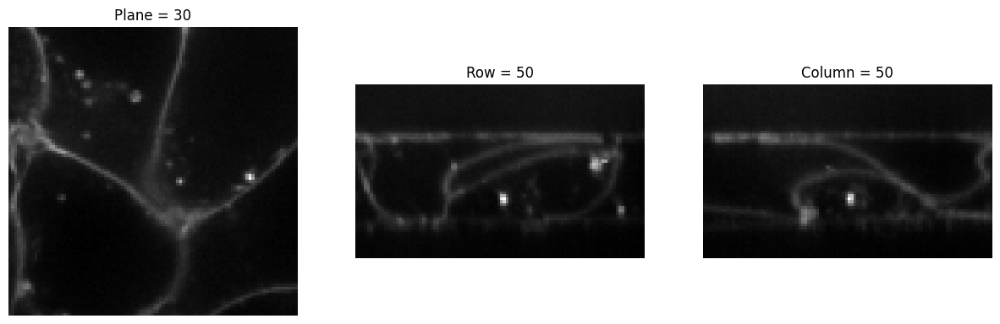
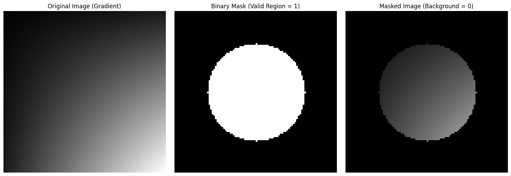

Data transformations and augmentations for 2D and 3D BioImages
Base Architecture & Fundamental Primitives
This section defines the architectural pillars of the transformations module. Its primary objective is to build a robust bridge between MONAI’s powerful medical processing ecosystem and fastai’s dynamic training pipeline engine.
To achieve this integration, a hybrid model has been designed to solve the most complex challenges of biomedical preprocessing: the seamless transition between array-based and dictionary-based operations, and the strict synchronization of stochastic augmentations across paired data streams (such as images and their corresponding segmentation masks).
The following public classes make up this operational core:
FunctionTransform: A functional adapter. It allows developers to encapsulate any generic processing logic (NumPy, SciPy, or custom functions) within a standard fastaiTransform object. It automatically processes multidimensional matrices (CHW/CDHW) by iterating channel-by-channel, or by wrapping native BioImageBase structures.
BioTransform: The internal abstraction foundation. It operates as a factory pattern that inspects class attributes and dynamically decides whether to instantiate a standard MONAI transformation (tensor-based) or infer and deploy its dictionary-based counterpart (when keys are detected).
MonaiTransform: A hybrid dual-execution wrapper. It allows switching the operational context in real-time via the backend parameter. With "monai", it returns the original operator (ideal for static baking into HDF5 matrices), while with "fastai", it returns a dynamic, GPU-ready augmentation pipeline object.
RandMonaiTransform: The stochastic (random) augmentation orchestrator. It solves the spatial misalignment problem in multimodal data by splitting the process into two phases: first, it samples the random parameters for the entire batch (before_call), and then it intercepts and executes the equivalent deterministic transformation using exactly those values (encodes). This ensures that, for example, an image and its mask undergo the exact same random rotation or crop.
ApplyTo: A routing modifier for multimodal pipelines. Given a batch of data structured in tuples or lists, it allows targeting and executing a transformation strictly on a single index (e.g., applying equalization only to the input image at idx=0, while keeping the mask’s class values intact at idx=1).
Generic MonaiTransform to apply any NumPy or SciPy function to an image. Works with CHW/CDHW arrays or BioImageBase.
Example: Creating a custom Gaussian blur transformation from a SciPy function
# Forzamos la eliminación de la restricción abstracta de fastai en tiempo de ejecuciónifhasattr(FunctionTransform, '__abstractmethods__'): FunctionTransform.__abstractmethods__ =frozenset()# Wrap the functional logic into a reusable pipeline componentblur_transform = FunctionTransform(gaussian_filter, sigma=2.0)# Simulate a 3-channel input array (Channels x Height x Width)sample_image = np.random.rand(3, 64, 64)# Ejecutamos la lógica de procesamiento canal por canal emulando el comportamiento internoblurred_output = np.stack( [blur_transform.func(sample_image[c], **blur_transform.func_kwargs) for c inrange(sample_image.shape[0])], axis=0)print(f"Input Shape: {sample_image.shape}")print(f"Output Shape: {blurred_output.shape}")
This reference outlines the configuration variables utilized by the dual-backend constructor to correctly instantiate and route the underlying structural transformations.
Returns: Depending on the backend requested, either returns an instantiated native MONAI object (e.g., mt.Flip) or the constructed fastai MonaiTransform wrapper subclass.
Parameter
Type
Default
Details
backend
str
"monai"
The orchestration execution engine context. Accepts "monai" (for native classes) or "fastai" (for dynamic training wrappers).
keys
list[str] or None
None
Optional identifiers triggering the inference and creation of the dictionary-based transformation counterpart.
*args, **kwargs
Any
-
Arbitrary configurations, dimensions, or target matrices forwarded into the core MONAI transformation layer initialization.
A transform that before_call its state at each __call__
Example: Creating a deterministic-replay random transform
# 1. We mock a simple data structure for the pipelineclass MockBioImage:def__init__(self, x, meta=None):self.x = xself.meta = meta or {}# 2. Define a stochastic class mapping both random and deterministic behaviorsclass ExampleRandShift(RandMonaiTransform): _monai_rand_transform = mt.RandShiftIntensity _monai_det_transform = mt.ShiftIntensity _rand_kwargs = {'offset': 'offsets'} _default_kwargs = {'offsets': (0.5, 0.5)} # Override encodes locally to bypass strict fastai typed-dispatch for our Mock objectdef encodes(self, x): tfm =self._monai_det_transform(**self.sampled_kwargs) out = tfm(x.x) # Pass the raw array matrix directly into MONAIreturntype(x)(x=out, meta=x.meta)# 3. Instantiate the fastai wrapperrand_tfm = ExampleRandShift(backend="fastai", prob=1.0)# Simulate a training loop step with a tensor matrixsample_img = MockBioImage(np.zeros((1, 5, 5)))# Step A: Sample parameters before processing the itemrand_tfm.before_call(sample_img)print(f"Sampled deterministic arguments: {rand_tfm.sampled_kwargs}")# Step B: Execute the transformation using the locked deterministic stateaugmented_img = rand_tfm.encodes(sample_img)print(f"Output array mean after shift: {augmented_img.x.mean()}")
Sampled deterministic arguments: {'offset': 0.5}
Output array mean after shift: 0.5
This reference details the structural class requirements and initialization parameters used to govern stochastic execution and dynamic variable sampling.
Returns: Depending on the backend, it either returns a native MONAI random transform or a fastai stateful replay wrapper.
Attribute / Parameter
Type
Default
Details
_monai_rand_transform
class
None
Class Attribute: Target MONAI stochastic class (e.g., mt.RandRotate).
_monai_det_transform
class
None
Class Attribute: Target MONAI deterministic equivalent (e.g., mt.Rotate).
_rand_kwargs
dict
{}
Class Attribute: Dictionary mapping target deterministic parameter keys to the corresponding stochastic range parameter keys.
prob
float
0.1
Parameter: The independent probability (p \in [0,1]) that the augmentation will trigger during a training pass.
This reference details the configurations used to dynamically route transformations within structured multi-element batches.
Returns: The modified element (if a single item was passed) or a new tuple where only the target index has been mutated by the encapsulated transform.
Parameter
Type
Default
Details
tfm
callable or Transform
Required
The transformation function or pipeline object to execute against the target.
idx
int
0
The list/tuple index designated for transformation. Element 0 typically represents the raw input image.
Deterministic Transforms
Deterministic transforms apply fixed, predictable structural or mathematical modifications to biological arrays. Unlike random augmentations (which rely on probabilities and random states to create variance during training), deterministic operations will always produce the exact same output given the exact same input. They are essential for consistent preprocessing, data standardization, and inference pipelines.
Adjust or add the channel dimension of input data to ensure channel_first shape.
This extracts the original_channel_dim info from provided meta_data dictionary or MetaTensor input. This value should state which dimension is the channel dimension so that it can be moved forward, or contain “no_channel” to state no dimension is the channel and so a 1-size first dimension is to be added.
Change the channel dimension of the image to the last dimension.
Size
The Size module focuses exclusively on manipulating the spatial footprint and resolution of multi-dimensional tensors. Whether you need to adjust physical voxel spacing, extract a specific region of interest, or expand boundaries to fit an architecture, these transforms provide granular control over the tensor’s absolute and relative dimensions.
To provide a clear and organized workflow, these operations have been structured into four logical groups based on their primary geometric purpose:
Resampling & Scaling (Resolution Adjustment)
Resample: Modifies the array’s spatial footprint or coordinate space via complex coordinate transformations.
Spacing: Resamples the image to match an explicitly defined physical voxel or pixel spacing, which is crucial for maintaining real-world physical accuracy across heterogeneous datasets.
Resize: Scales the spatial dimensions to reach a precise target size using pixel interpolation.
Cropping Operations (Spatial Extraction)
Crop: A semantic alias for extracting specific regions using explicit absolute coordinates (start/end).
SpatialCrop: The canonical wrapper for MONAI’s structural cropping operation. Extracts a specific region using center coordinates and explicit bounding box dimensions.
CenterSpatialCrop: Automatically calculates the geometric center of the spatial dimensions and extracts a fixed-size patch.
CropForeground: Dynamically isolates the active signal by cropping away uninformative background pixels based on a custom selection function.
CenterScaleCrop: Proportionally scales down the spatial dimensions to extract a relative fraction of the original size (e.g., the central 50%).
CropND: A native N-dimensional structural transformation that slices arrays or BioImageBase volumes along specific axes using explicit Python slices.
Padding Operations (Spatial Expansion)
Pad: Adds an explicit, user-defined number of padding values to the beginning and end of every single axis of the tensor.
SpatialPad: Smartly pads the tensor only if necessary, ensuring it reaches a guaranteed absolute minimum spatial size.
BorderPad: Symmetrically expands the spatial boundaries by adding a uniform, fixed pixel margin to all specified axes.
DivisiblePad: Dynamically pads spatial axes until they are perfectly divisible by a specified value k. This is critical to prevent shape-mismatch errors in architectures with skip connections (like U-Net).
Standardization & Analysis
BoundingRect: An analytical tool that computes and returns the absolute spatial coordinates (bounding box) of the active foreground, rather than returning a cropped image.
ResizeWithPadOrCrop: The ultimate structural standardizer. It guarantees an exact target shape by automatically cropping the image if it is too large, or padding it if it is too small.
A subclass of Spacing that handles image resampling based on specified sampling factors or voxel dimensions.
The Resample class provides a flexible way to adjust the spacing (voxel size) of images by specifying either a sampling factor or explicitly providing new voxel dimensions.
Example: Resampling demonstrating polymorphic input support (BioVolume, Arrays, MetaTensor, and Dicts)
# 1. Base initializationimg = BioVolume(torchTensor(cells3d()[:,0]))print("Input")show_slices(img, showlines=False)# 2. Applying to a BioVolume structureimg2 = Resample(4)(img)print("Output type:", type(img2).__name__)show_slices(img2, showlines=False)# 3. Applying to a raw multi-dimensional arrayimg2 = Resample(4)(cells3d()[:,0])print("Output type:", type(img2).__name__)show_slices(img2, showlines=False)# 4. Applying to a MONAI MetaTensorimg2 = Resample(4)(MetaTensor(img))print("Output type:", type(img2).__name__)show_slices(img2, showlines=False)# 5. Applying using the dictionary-based inference pathimg2 = Resample(4, keys=["image"])({ "image": MetaTensor(img) })print("Output type:", type(img2).__name__)show_slices(img2['image'], showlines=False)
Input
Output type: MetaTensor
Output type: MetaTensor
/home/bm/miniforge3/envs/bonsai_latest/lib/python3.11/site-packages/monai/transforms/spatial/array.py:499: UserWarning: `data_array` is not of type MetaTensor, assuming affine to be identity.
warnings.warn("`data_array` is not of type MetaTensor, assuming affine to be identity.")
This reference details the explicit configurations used to standardize structural dimensions across multi-modal scans.
Returns: A structural deterministic transformation pipeline calibrated to the requested execution backend.
Parameter
Type
Default
Details
sampling
tuple, float, or int
None
The target voxel spacing dimensions (e.g., 4 or (1.5, 1.5)). Can be passed directly as the first positional argument. Automatically mapped to pixdim internally.
keys
list[str] or None
None
Optional identifiers triggering the creation of the dictionary-based transformation counterpart (Spacingd).
*args, **kwargs
Any
-
Arbitrary arguments and properties (such as mode for interpolation, or pixdim directly) forwarded to MONAI’s foundational Spacing routine.
Example: Performing a precise deterministic crop on a 2D slice
# 1. Initialize the base image# By slicing [:, 0], we extract a single 2D slice (Shape: [Channels, Y, X])img = BioVolume(torchTensor(cells3d()[:,0]))print(f"Original Input Size: {img.shape}")show_slices(img, showlines=False)# 2. Extract a specific region using starting and ending coordinates# Since our input is 2D (Y, X), we provide 2D coordinates.crop_tfm = Crop(roi_start=(50, 50), roi_end=(200, 200))img2 = crop_tfm(img)print(f"Cropped Output Size: {img2.shape}")show_slices(img2, showlines=False)
Example: Targeting a specific anatomical region using a center coordinate and bounding box
# 1. Initialize the base image (Shape: [Channels, Y, X])img = BioVolume(torchTensor(cells3d()[:,0]))print(f"Original Input Size: {img.shape}")show_slices(img, showlines=False)# 2. Extract a specific patch around a central point# Providing 2D coordinates for the center (Y, X) and the bounding box size (Y, X).spatial_crop_tfm = SpatialCrop(roi_center=(128, 128), roi_size=(100, 100))img2 = spatial_crop_tfm(img)print(f"Cropped Output Size: {img2.shape}")show_slices(img2, showlines=False)
Original Input Size: torch.Size([60, 256, 256])
Cropped Output Size: torch.Size([60, 100, 100])

SpatialCrop Class Attributes & Parameter Reference
This reference details the configurations used to explicitly define bounding boxes for spatial extractions.
Returns: A fastai-compatible augmentation wrapper (backend="fastai") or a native structural operation (backend="monai").
Parameter
Type
Default
Details
roi_center
tuple or list
None
Voxel coordinates representing the center point of the target crop region.
roi_size
tuple or list
None
The specific spatial extent (dimensions) of the bounding box to be extracted.
roi_start
tuple or list
None
Voxel coordinates for the starting corner of the bounding box.
roi_end
tuple or list
None
Voxel coordinates for the ending corner of the bounding box.
roi_slices
tuple of slice
None
Explicit Python slice objects defining the exact extraction region.
keys
list[str] or None
None
Optional identifiers triggering the dictionary-based counterpart (SpatialCropd).
backend
str
"monai"
Execution context flag. Set to "fastai" for the stateful pipeline wrapper.
Example: Automatically cropping a central patch from a biological image
# 1. Initialize the base image# By slicing [:, 0], we extract a single 2D slice (Shape: [Channels, Y, X])img = BioVolume(torchTensor(cells3d()[:,0]))print(f"Original Input Size: {img.shape}")show_slices(img, showlines=False)# 2. Extract a centered region# Since our input is 2D, we provide a 2D roi_size (Y, X).# We could also just pass `roi_size=100` and it would broadcast automatically.center_crop_tfm = CenterSpatialCrop(roi_size=(100, 100))img2 = center_crop_tfm(img)print(f"Cropped Output Size: {img2.shape}")show_slices(img2, showlines=False)
Example: Dynamically removing black background borders from an image
# 1. Initialize the base image (Shape: [Channels, Y, X])img = BioVolume(torchTensor(cells3d()[:,0]))print(f"Original Input Size: {img.shape}")show_slices(img, showlines=False)# 2. Extract the foreground dynamically# By default, MONAI considers any pixel > 0 as foreground.# We can add a spatial margin (e.g., 5 pixels) around the detected bounding box.crop_fg_tfm = CropForeground(margin=5)img2 = crop_fg_tfm(img)print(f"Foreground Cropped Size: {img2.shape}")show_slices(img2, showlines=False)
Example: Calculating the bounding box coordinates of an active signal
# 1. Initialize the base image (Shape: [Channels, Y, X])img = BioVolume(torchTensor(cells3d()[:,0]))print(f"Original Input Size: {img.shape}")# 2. Extract bounding rectangle coordinates# By default, it finds the absolute limits of all pixels > 0.# It returns a set of [min, max] coordinates for each spatial dimension.bbox_tfm = BoundingRect()coords = bbox_tfm(img)print(f"Computed Bounding Box Coordinates [[Y_min, Y_max], [X_min, X_max]]:\n{coords}")
BoundingRect Class Attributes & Parameter Reference
This reference details the configurations used to analyze and extract the spatial coordinate limits of active regions.
Returns: A fastai-compatible augmentation wrapper (backend="fastai") or a native structural operation (backend="monai").
Parameter
Type
Default
Details
select_fn
callable
lambda x: x > 0
A function to evaluate which pixels belong to the foreground. Passed via **kwargs.
keys
list[str] or None
None
Identifiers triggering the dictionary counterpart (BoundingRectd).
bbox_key_postfix
str
"bbox"
Only applicable if using keys. The string appended to the original key to store the resulting coordinates in the dictionary (e.g., "image_bbox"). Passed via **kwargs.
backend
str
"monai"
Execution context flag. Set to "fastai" for the dynamic wrapper.
**kwargs
dict
{}
Additional properties forwarded directly to the MONAI base operator.
Example: Proportionally cropping the central 50% of an image
# 1. Initialize the base image (Shape: [Channels, Y, X])img = BioVolume(torchTensor(cells3d()[:,0]))print(f"Original Input Size: {img.shape}")show_slices(img, showlines=False)# 2. Extract a proportionally scaled center region# Passing 0.5 means we want to crop the central region covering exactly 50% # of the original spatial dimensions (Y and X).scale_crop_tfm = CenterScaleCrop(roi_scale=0.5)img2 = scale_crop_tfm(img)print(f"Proportionally Cropped Output Size: {img2.shape}")show_slices(img2, showlines=False)
def CropND( slices:list, # List of slice objects or tuples (start, end) for each dimension dims:list=None, # List of dimensions to apply the slices. If None, slices are applied to all dimensions.):
Crops an ND tensor along a specified dimension.
This transform crops an ND tensor along specified dimensions, which could be a channel or spatial dimension.
Example: Slicing specific dimensions natively via CropND
# 1. Initialize the base image (Shape: [Channels, Y, X])img = BioVolume(torchTensor(cells3d()[:,0]))print(f"Original Input Size: {img.shape}")show_slices(img, showlines=False)# --- Scenario A: Sequential Cropping ---# Define the slices for cropping (applied to the first dimension)slices = [(30, 50)]# Create an instance of CropNDcrop_transform = CropND(slices=slices)img3 = crop_transform(img)print(f"Sequentially Cropped Size:")print(img3.size())show_slices(img3, showlines=False)# --- Scenario B: Dimension-Targeted Cropping ---# Define the slices for croppingslices = [(30, 50), (0, 40)]dims = [0, 2]# Create an instance of CropNDcrop_transform = CropND(slices=slices, dims=dims)img4 = crop_transform(img)print(f"Targeted Cropped Size:")print(img4.size())show_slices(img4, showlines=False)
# 1. Initialize the base image (Shape: [Channels, Y, X])img = BioVolume(torchTensor(cells3d()[:,0]))print(f"Original Input Size: {img.shape}")show_slices(img, showlines=False)# 2. Add symmetric padding to the spatial dimensions# 'to_pad' expects a tuple of (pad_before, pad_after) for each dimension.# Our shape is [Channels, Y, X]. We add 0 padding to Channels, # and 30 pixels of padding before and after the Y and X axes.pad_tfm = Pad(to_pad=[(0, 0), (30, 30), (30, 30)])img2 = pad_tfm(img)print(f"Padded Output Size:")print(img2.size())show_slices(img2, showlines=False)
Example: Smartly padding an image to guarantee a minimum absolute spatial shape
# 1. Initialize the base image (Shape: [Channels, Y, X])img = BioVolume(torchTensor(cells3d()[:,0]))print(f"Original Input Size: {img.shape}")show_slices(img, showlines=False)# 2. Pad the image to a guaranteed absolute size# We pass a target 2D spatial size (Y, X). For instance, if the original image # is 256x256, setting spatial_size to (300, 300) will add padding to reach it.# By default, it pads symmetrically around the center.spatial_pad_tfm = SpatialPad(spatial_size=(300, 300))img2 = spatial_pad_tfm(img)print(f"Spatially Padded Output Size:")print(img2.size())show_slices(img2, showlines=False)
This reference details the configurations used to smartly guarantee minimum tensor shapes.
Returns: A fastai-compatible augmentation wrapper (backend="fastai") or a native structural operation (backend="monai").
Parameter
Type
Default
Details
spatial_size
tuple, list, or int
Required
The absolute target spatial dimensions for the output tensor (e.g., (300, 300)). Passed as the first positional argument.
method
str
"symmetric"
The padding method to calculate the margins. Options include "symmetric" (centers the image) or "end" (pads only at the right/bottom). Passed via **kwargs.
mode
str
"constant"
The value-filling strategy. Options include "constant", "reflect", "replicate", or "circular". Passed via **kwargs.
keys
list[str] or None
None
Optional identifiers triggering the dictionary-based counterpart (SpatialPadd).
backend
str
"monai"
Execution context flag. Set to "fastai" for the dynamic pipeline wrapper.
**kwargs
dict
{}
Additional properties forwarded directly to the MONAI base operator.
Example: Adding a uniform margin around the entire spatial boundary
# 1. Initialize the base image (Shape: [Channels, Y, X])img = BioVolume(torchTensor(cells3d()[:,0]))print(f"Original Input Size: {img.shape}")show_slices(img, showlines=False)# 2. Apply a uniform border pad# Passing an integer adds that exact amount of padding to both sides # of all spatial dimensions. (e.g., +20 pixels to top, bottom, left, and right).border_pad_tfm = BorderPad(spatial_border=20)img2 = border_pad_tfm(img)print(f"Border-Padded Output Size:")print(img2.size())show_slices(img2, showlines=False)
This reference details the configurations used to dynamically attach margins to spatial axes.
Returns: A fastai-compatible augmentation wrapper (backend="fastai") or a native structural operation (backend="monai").
Parameter
Type
Default
Details
spatial_border
int or tuple
Required
The number of pixels/voxels to pad at the boundaries. An integer applies symmetrically to all spatial axes. A tuple allows dimension-specific borders. Passed as a positional argument.
mode
str
"constant"
The value-filling strategy. Options include "constant", "reflect", "replicate", or "circular". Passed via **kwargs.
keys
list[str] or None
None
Optional identifiers triggering the dictionary-based counterpart (BorderPadd).
backend
str
"monai"
Execution context flag. Set to "fastai" for the dynamic pipeline wrapper.
**kwargs
dict
{}
Additional properties forwarded directly to the MONAI base operator.
Example: Automatically padding an oddly shaped image for U-Net compatibility
# 1. Initialize a base image and artificially crop it to an odd shape (Shape: [Channels, 100, 125])img_full = BioVolume(torchTensor(cells3d()[:,0]))img_odd = img_full[:, :100, :125]print(f"Original Odd Input Size: {img_odd.shape}")show_slices(img_odd, showlines=False)# 2. Pad to make spatial dimensions divisible by 32# A standard U-Net with 5 pooling operations requires spatial sizes to be multiples of 2^5 = 32.# Here, the Y-axis (100) will be padded to 128, and the X-axis (125) will be padded to 128.div_pad_tfm = DivisiblePad(k=32)img2 = div_pad_tfm(img_odd)print(f"Divisible-Padded Output Size:")print(img2.size())show_slices(img2, showlines=False)
Original Odd Input Size: torch.Size([60, 100, 125])
DivisiblePad Class Attributes & Parameter Reference
This reference details the configurations used to dynamically pad arrays to architectural multiples.
Returns: A fastai-compatible augmentation wrapper (backend="fastai") or a native structural operation (backend="monai").
Parameter
Type
Default
Details
k
int or tuple
Required
The target divisor. If an int is provided, all spatial axes will be padded until they are divisible by this number. A tuple allows dimension-specific divisors. Passed as a positional argument.
mode
str
"constant"
The padding strategy. Options include "constant", "reflect", "replicate", or "circular". Passed via **kwargs.
keys
list[str] or None
None
Optional identifiers triggering the dictionary-based counterpart (DivisiblePadd).
backend
str
"monai"
Execution context flag. Set to "fastai" for the dynamic pipeline wrapper.
**kwargs
dict
{}
Additional properties forwarded directly to the MONAI base operator.
Example: Forcing a specific absolute size regardless of the input dimensions
# 1. Initialize the base image (Shape: [Channels, Y, X])img = BioVolume(torchTensor(cells3d()[:,0]))print(f"Original Input Size: {img.shape}")show_slices(img, showlines=False)# 2. Force an exact spatial size# Suppose the original size is roughly 256x256.# By requesting (150, 300), the transform will automatically CROP the Y-axis # down to 150, and PAD the X-axis up to 300, all in a single step.standardize_tfm = ResizeWithPadOrCrop(spatial_size=(150, 300))img2 = standardize_tfm(img)print(f"Standardized Output Size:")print(img2.size())show_slices(img2, showlines=False)
This reference details the configurations used to force arrays into an exact spatial footprint.
Returns: A fastai-compatible augmentation wrapper (backend="fastai") or a native structural operation (backend="monai").
Parameter
Type
Default
Details
spatial_size
tuple, list, or int
Required
The absolute target spatial dimensions (e.g., (256, 256)). An integer broadcasts to all spatial axes. Passed as a positional argument.
method
str
"symmetric"
The strategy used for both padding and cropping. Options include "symmetric" (centers the operation) or "end". Passed via **kwargs.
mode
str
"constant"
The value-filling strategy used if padding is required. Options include "constant", "reflect", "replicate", or "circular". Passed via **kwargs.
keys
list[str] or None
None
Optional identifiers triggering the dictionary-based counterpart (ResizeWithPadOrCropd).
backend
str
"monai"
Execution context flag. Set to "fastai" for the dynamic pipeline wrapper.
**kwargs
dict
{}
Additional properties forwarded directly to the MONAI base operator.
Spatial Orientation & Deformation
In biomedical image analysis, absolute spatial coherence is the foundation upon which all reliable deep learning models are built. Unlike standard 2D photographs, medical and biological volumes possess a real physical coordinate framework, specific anatomical orientations, and metric resolutions (voxel spacing) that vary across different scanners and institutions.
This section groups the tools responsible for standardizing the physical space of the images and applying advanced geometric deformations—both linear and non-linear, as well as interpolation-independent operations. These are essential to simulate natural morphological variability during Data Augmentation and ensure data interoperability.
Classes included in this module:
Grid Transformations and Regression
GridPatch: Divides a volume into a structured pattern of geometric patches. Essential for patch-based learning algorithms, managing large volumetric datasets efficiently.
GridSplit: Separates or decomposes the image into its individual spatial axes or channel planes.
Standardization and Resampling
SpatialResample: Normalizes the physical resolution (voxel spacing) by resampling the image. Ensures that the neural network processes anatomy at a consistent and uniform metric scale across datasets.
ResampleToMatch: Aligns and resamples a moving image (source) to match the resolution, size, and spatial context of a fixed image (target).
Orientation and Symmetry
Orientation: Automatically reorients the spatial axes of the volume to match an industry-standard anatomical coordinate system (such as "RAS" or "LPS").
Flip: Applies a mirror effect or inversion of spatial axes, simulating natural anatomical symmetries (left-right, anterior-posterior).
Linear and Geometric Transformations
Affine: The “Swiss Army knife” that applies multiple spatial geometric transformations (rotation, scaling, translation, and shearing) in a single, highly optimized mathematical pass to preserve image quality.
Rotate: Applies arbitrary rotations of specific angles around defined spatial axes to increase geometric variability.
Rotate90: Performs strict rotations in multiples of 90 degrees. This operation is highly efficient as it does not require interpolation (it’s an array index manipulation), preserving data integrity.
Zoom: Applies metric scaling, zooming the image in or out while preserving the aspect ratio, fundamental for normalizing the scale of structures.
Generation and Non-Linear Deformation
AffineGrid: Generates the underlying mathematical coordinate maps needed to calculate geometric deformations from scratch, without directly processing image data.
GridDistortion: Applies local, elastic, and non-linear spatial deformations. It uses a grid of independently displaced nodes to realistically simulate the natural flexibility of living biological tissue, ideal for biologically plausible Data Augmentation.
# 1. Initialize the base image (Shape: [Channels, Y, X])img = BioVolume(torchTensor(cells3d()[:,0]))print(f"Original Input Size: {img.shape}")show_slices(img, showlines=False)# 2. Apply a 45-degree rotation# MONAI strictly expects angles in radians (45 degrees = pi/4).# We set keep_size=False so the canvas expands to fit the rotated corners # without cropping the original biological signal.rotate_tfm = Rotate(angle=np.pi/4, keep_size=False)img2 = rotate_tfm(img)print(f"Rotated Output Size:")print(img2.size())show_slices(img2, showlines=False)
This reference details the configurations used to rotate arrays and handle coordinate grid interpolations.
Returns: A fastai-compatible augmentation wrapper (backend="fastai") or a native orientation operation (backend="monai").
Parameter
Type
Default
Details
angle
float or Sequence[float]
0.0
The rotation angle(s) in radians. For 2D, a single float is used. For 3D, a sequence of up to 3 floats specifies rotation around each spatial axis.
keep_size
bool
True
If True, the output tensor matches the input shape (which might crop the corners). If False, the canvas expands to fit the entire rotated image. Passed via **kwargs.
mode
str
"bilinear"
Interpolation mode. Options typically include "nearest", "bilinear", or "bicubic". Passed via **kwargs.
padding_mode
str
"border"
Strategy for filling newly created empty spaces outside the rotated bounds. Options: "zeros", "border", "reflection". Passed via **kwargs.
keys
list[str] or None
None
Optional identifiers triggering the dictionary-based counterpart (Rotated).
backend
str
"monai"
Execution context flag. Set to "fastai" for the dynamic pipeline wrapper.
# 1. Initialize the base image (Shape: [Channels, Y, X])img = BioVolume(torchTensor(cells3d()[:,0]))print(f"Original Input Size: {img.shape}")show_slices(img, showlines=False)# 2. Apply a 90-degree rotation in the spatial plane# By default, it rotates 1 time (k=1) in the plane defined by axes (0, 1) -> Y, X.# If we passed k=2, it would rotate 180 degrees.rotate90_tfm = Rotate90(spatial_axes=(0, 1), k=1)img2 = rotate90_tfm(img)print(f"Rotate90 Output Size:")print(img2.size())show_slices(img2, showlines=False)
Example: Applying a digital zoom to a biological sample
# 1. Initialize the base image (Shape: [Channels, Y, X])img = BioVolume(torchTensor(cells3d()[:,0]))print(f"Original Input Size: {img.shape}")show_slices(img, showlines=False)# 2. Apply a 1.5x zoom# By keeping the default keep_size=True, the transform scales the image by 1.5x# and then crops the boundaries, ensuring the final shape matches the original.# If we set keep_size=False, the canvas would expand to fit the new zoomed dimensions.zoom_tfm = Zoom(zoom=1.5)img2 = zoom_tfm(img)print(f"Zoomed Output Size (Notice it remains the same as the original):")print(img2.size())show_slices(img2, showlines=False)
Original Input Size: torch.Size([60, 256, 256])
Zoomed Output Size (Notice it remains the same as the original):
torch.Size([60, 256, 256])
This reference details the configurations used to apply relative spatial scaling.
Returns: A fastai-compatible augmentation wrapper (backend="fastai") or a native deformation operation (backend="monai").
Parameter
Type
Default
Details
zoom
float or Sequence[float]
1.0
The multiplier to scale the spatial dimensions. E.g., 1.5 increases size by 50%. A sequence allows different zoom factors for each axis.
keep_size
bool
True
If True, crops or pads the output to strictly match the input’s original size. If False, the output tensor dimensions change based on the zoom factor. Passed via **kwargs.
mode
str
"area" / "bilinear"
Interpolation mode used to calculate new voxel values. Options include "nearest", "bilinear", "bicubic", or "area". Passed via **kwargs.
padding_mode
str
"constant"
If zooming out (zoom < 1.0) with keep_size=True, defines how to fill the new empty borders. Options: "constant", "reflect", "replicate", "circular". Passed via **kwargs.
keys
list[str] or None
None
Optional identifiers triggering the dictionary-based counterpart (Zoomd).
backend
str
"monai"
Execution context flag. Set to "fastai" for the dynamic pipeline wrapper.
Example: Mirroring an image horizontally (flipping along the X-axis)
# 1. Initialize the base image (Shape: [Channels, Y, X])img = BioVolume(torchTensor(cells3d()[:,0]))print(f"Original Input Size: {img.shape}")show_slices(img, showlines=False)# 2. Apply a spatial flip# Assuming spatial dimensions are (Y, X), axis 0 is Y (vertical), and axis 1 is X (horizontal).# Passing spatial_axis=1 will flip the image horizontally (left-to-right).# If spatial_axis=None (the default), it flips all spatial axes simultaneously.flip_tfm = Flip(spatial_axis=1)img2 = flip_tfm(img)print(f"Flipped Output Size:")print(img2.size())show_slices(img2, showlines=False)
Example: Decomposing a large image into a grid of smaller patches
# 1. Initialize the base image (Shape: [Channels, Y, X])img = BioVolume(torchTensor(cells3d()[:,0]))print(f"Original Input Size: {img.shape}")show_slices(img, showlines=False)# 2. Apply the GridPatch operation# We divide the image into smaller spatial patches of 64x64.# The transform returns a generator/iterable, so we convert it to a list.grid_tfm = GridPatch(patch_size=(64, 64))patches =list(grid_tfm(img))print(f"Generated a grid of {len(patches)} patches.")print(f"Shape of the first extracted patch: {patches[0].shape}")# Visualize just the very first patch of the gridshow_slices(patches[0], showlines=False)
Original Input Size: torch.Size([60, 256, 256])
Generated a grid of 16 patches.
Shape of the first extracted patch: torch.Size([60, 64, 64])
This reference details the configurations used to decompose large arrays into manageable grids.
Returns: A fastai-compatible augmentation wrapper (backend="fastai") or a native patching operator (backend="monai"). Note: The runtime output is an iterable of patched tensors.
Parameter
Type
Default
Details
patch_size
tuple
Required
The absolute spatial dimensions for each generated patch (e.g., (64, 64)). Passed as a positional argument.
overlap
float or tuple
0.0
The amount of overlap between adjacent patches, expressed as a fraction of the patch size (e.g., 0.5 means 50% overlap). Passed via **kwargs.
pad_mode
str
"constant"
If the original image is not perfectly divisible by the patch size, dictates how to pad the boundaries. Passed via **kwargs.
keys
list[str] or None
None
Optional identifiers triggering the dictionary-based counterpart (GridPatchd).
backend
str
"monai"
Execution context flag. Set to "fastai" for the dynamic pipeline wrapper.
**kwargs
dict
{}
Additional properties forwarded directly to the MONAI base operator.
Example: Splitting an image into a 2x2 grid of proportional patches
# 1. Initialize the base image (Shape: [Channels, Y, X])img = BioVolume(torchTensor(cells3d()[:,0]))print(f"Original Input Size: {img.shape}")show_slices(img, showlines=False)# 2. Apply the GridSplit operation# We ask the transform to divide the spatial canvas into a 2x2 grid.# This will yield 4 evenly divided patches (top-left, top-right, bottom-left, bottom-right).# The transform returns a generator/iterable, so we convert it to a list.grid_tfm = GridSplit(grid=(2, 2))patches =list(grid_tfm(img))print(f"Generated a grid of {len(patches)} patches.")print(f"Shape of the first extracted patch: {patches[0].shape}")# Visualize just the very first segment of the split (Top-Left)show_slices(patches[0], showlines=False)
Original Input Size: torch.Size([60, 256, 256])
Generated a grid of 4 patches.
Shape of the first extracted patch: torch.Size([60, 128, 128])
This reference details the configurations used to divide an array into fixed proportional segments.
Returns: A fastai-compatible augmentation wrapper (backend="fastai") or a native splitting operator (backend="monai"). Note: The runtime output is an iterable of split tensors.
Parameter
Type
Default
Details
grid
tuple or None
None
The number of splits along each spatial dimension (e.g., (2, 2) splits a 2D image into 4 patches). Passed via **kwargs.
size
tuple or None
None
The absolute size of each split chunk. You must provide either grid or size (but not both). Passed via **kwargs.
keys
list[str] or None
None
Optional identifiers triggering the dictionary-based counterpart (GridSplitd).
backend
str
"monai"
Execution context flag. Set to "fastai" for the dynamic pipeline wrapper.
**kwargs
dict
{}
Additional properties forwarded directly to the MONAI base operator.
## Example: Resampling the spatial coordinate grid of an image# 1. Initialize the base image (Shape: [Channels, Y, X])img = BioVolume(torchTensor(cells3d()[:,0]))print(f"Original Input Size: {img.shape}")show_slices(img, showlines=False)# 2. Apply Spatial Resampling# We force the image to resample its coordinate grid to a new 128x128 footprint.# Unlike a standard 'Resize', SpatialResample can also accept complex target affine matrices.resample_tfm = SpatialResample(spatial_size=(128, 128))img2 = resample_tfm(img)print(f"Resampled Output Size:")print(img2.size())show_slices(img2, showlines=False)
## Example: Aligning a low-res mask to perfectly match a high-res image grid# 1. Let's simulate a scenario with mismatched spatial resolutionsimg_high_res = BioVolume(torchTensor(cells3d()[:,0]))# Create an artificially smaller "mask" to simulate mismatched acquisitionmismatched_mask = SpatialResample(spatial_size=(64, 64))(img_high_res) # Package them into a dictionary representing a single patient's datadata_dict = {"image": img_high_res, "mask": mismatched_mask}print(f"Mismatched Shapes -> Image: {data_dict['image'].shape}, Mask: {data_dict['mask'].shape}")# 2. Apply dictionary-based ResampleToMatch# We configure it to resample the 'mask' using the 'image' as the spatial reference.# We use mode="nearest" to preserve discrete class values in masks.match_tfm = ResampleToMatch(keys=["mask"], key_dst="image", mode="nearest")matched_dict = match_tfm(data_dict)print(f"Matched Shapes -> Image: {matched_dict['image'].shape}, Mask: {matched_dict['mask'].shape}")show_slices(matched_dict['mask'], showlines=False)
This reference details the configurations used to align and interpolate arrays to a reference grid.
Returns: A fastai-compatible augmentation wrapper (backend="fastai") or a native deformation operation (backend="monai").
Parameter
Type
Default
Details
keys
list[str] or None
None
Identifiers triggering the dictionary-based counterpart (ResampleToMatchd). Defines which arrays will be resampled.
key_dst
str
None
Required if using keys. The dictionary key pointing to the reference image. The transform will extract its spatial metadata to govern the resampling. Passed via **kwargs.
mode
str
"bilinear"
Interpolation mode used for resampling. E.g., use "nearest" for segmentation masks or "bilinear"/"bicubic" for images. Passed via **kwargs.
padding_mode
str
"border"
Strategy for filling out-of-bounds pixels during resampling. Options include "zeros", "border", or "reflection". Passed via **kwargs.
backend
str
"monai"
Execution context flag. Set to "fastai" for the dynamic pipeline wrapper.
**kwargs
dict
{}
Additional properties forwarded directly to the MONAI base operator.
## Example: Standardizing the physical orientation of a volume# 1. Initialize the base volume (Shape: [Channels, Z, Y, X])# cells3d()[:,0] gives us [60, 256, 256] (Z, Y, X).# We use .unsqueeze(0) to explicitly add the Channel dimension -> [1, 60, 256, 256]img = BioVolume(torchTensor(cells3d()[:,0]).unsqueeze(0))print(f"Original Input Size: {img.shape}")# show_slices strictly expects a 3D spatial volume. # We pass img[0] to temporarily strip the channel dimension for plotting.show_slices(img[0], showlines=False)# 2. Apply Anatomical Orientation# We specify the target orientation using axis codes.# 'RAS' is a very common 3D standard representing Right, Anterior, Superior.# The transform automatically calculates the necessary transpositions/flips # to rearrange the spatial axes into this specific coordinate space.orientation_tfm = Orientation(axcodes="RAS")img2 = orientation_tfm(img)print(f"Re-oriented Output Size:")print(img2.size())# Again, strip the channel dimension for the final visualizationshow_slices(img2[0], showlines=False)
Original Input Size: torch.Size([1, 60, 256, 256])
Orientation Class Attributes & Parameter Reference
This reference details the configurations used to align physical spatial axes to standardized anatomical codes.
Returns: A fastai-compatible augmentation wrapper (backend="fastai") or a native orientation operation (backend="monai").
Parameter
Type
Default
Details
axcodes
str
None
The target axis codes representing the desired physical orientation (e.g., "RAS", "LPS", "SPL"). Passed via **kwargs.
as_closest_canonical
bool
False
If True, ignores the specific axcodes and automatically snaps the orientation to the closest standard canonical orientation (like RAS). Passed via **kwargs.
labels
tuple
None
Optional identifiers for the original spatial dimensions if the affine metadata is missing. Passed via **kwargs.
keys
list[str] or None
None
Optional identifiers triggering the dictionary-based counterpart (Orientationd).
backend
str
"monai"
Execution context flag. Set to "fastai" for the dynamic pipeline wrapper.
**kwargs
dict
{}
Additional properties forwarded directly to the MONAI base operator.
## Example: Applying a combined Rotate + Scale + Translate in a single pass# 1. Initialize the base volume (Shape: [Channels, Z, Y, X])# We explicitly add the Channel dimension -> [1, 60, 256, 256]img = BioVolume(torchTensor(cells3d()[:,0]).unsqueeze(0))print(f"Original Input Size: {img.shape}")show_slices(img[0], showlines=False)# 2. Apply a complex Affine transformation# Since our volume has 3 spatial dimensions (Z, Y, X), we pass a tuple of 3 values.# - No change to Z (axis 0)# - Rotate 45 degrees (pi/4) in the YX plane# - Scale Y and X by 1.5x (zoom in)# - Translate/shift Y by 20 pixels and X by -20 pixels# IMPORTANT: image_only=True forces MONAI to return just the tensor, not the affine matrix tupleaffine_tfm = Affine( rotate_params=(0.0, 0.0, np.pi/4), scale_params=(1.0, 1.5, 1.5), translate_params=(0, 20, -20), padding_mode="zeros", image_only=True)img2 = affine_tfm(img)print(f"Affine Output Size:")print(img2.size())# Strip the channel dimension for the final visualizationshow_slices(img2[0], showlines=False)
Original Input Size: torch.Size([1, 60, 256, 256])
## Example: Generating a mathematical deformation grid# 1. Initialize the grid generator# We configure it to apply a 45-degree rotation (pi/4 radians).grid_tfm = AffineGrid(rotate_params=(np.pi/4,))# 2. Generate the coordinate grid# IMPORTANT: We pass the size as a LIST [64, 64], not a tuple.# If we pass a tuple (64, 64), fastai assumes it's a multimodal batch (like image & mask)# and tries to process the numbers 64 and 64 separately!output = grid_tfm([64, 64])# AffineGrid returns a tuple of (grid, affine_matrix). We safely extract the grid [0].deformation_grid = output[0] ifisinstance(output, tuple) else outputprint(f"Deformation Grid Output Size:")print(deformation_grid.size())# For a 2D spatial size (64, 64), it returns a tensor of shape [2, 64, 64].# The 2 channels represent the independent X and Y coordinate shifts for every pixel.
This reference details the configurations used to generate mathematical deformation coordinate maps.
Returns: A fastai-compatible wrapper (backend="fastai") or a native grid generator (backend="monai").
Parameter
Type
Default
Details
affine
array-like
None
A custom square matrix defining the exact mathematical transformation. Passed via **kwargs.
rotate_params
float or Sequence
None
Rotation angles in radians. For 3D grids, a sequence of 3 floats. Passed via **kwargs.
scale_params
float or Sequence
None
Scale multipliers (e.g., 1.5 for zooming in). Passed via **kwargs.
translate_params
float or Sequence
None
Translation offsets in pixels/voxels. Passed via **kwargs.
shear_params
float or Sequence
None
Shearing factors for the spatial axes. Passed via **kwargs.
spatial_size
tuple or list
None
The absolute target output size for the grid. Explicitly supported during initialization via our static patch, or can be passed dynamically during execution.
backend
str
"monai"
Execution context flag. Set to "fastai" for the dynamic pipeline wrapper.
**kwargs
dict
{}
Additional properties forwarded directly to the MONAI base operator (e.g., device, align_corners).
(Note: The keys parameter is intentionally omitted from this transform because a dictionary counterpart does not exist in the MONAI library for grid generation).
## Example: Applying a non-linear, elastic grid distortion to a volume# 1. Initialize the base volume (Shape: [Channels, Z, Y, X])img = BioVolume(torchTensor(cells3d()[:,0]).unsqueeze(0))print(f"Original Input Size: {img.shape}")show_slices(img[0], showlines=False)# 2. Prepare the deterministic grid displacements (distort_steps)num_cells =4spatial_dims =3# CORRECT DEFORMATION MULTIPLIERS:# MONAI interprets `distort_steps` as the relative scale/length of each cell.# Normal size is 1.0. We randomly stretch (e.g., 1.1) or shrink (e.g., 0.9) each cell.# We generate `num_cells` multipliers per spatial dimension.steps =tuple( np.random.uniform(0.5, 1.5, size=(num_cells,)).tolist() for _ inrange(spatial_dims))# 3. Apply the Grid Distortiondistortion_tfm = GridDistortion( num_cells=num_cells, distort_steps=steps, padding_mode="border")img2 = distortion_tfm(img)print(f"Distorted Output Size:")print(img2.size())# Strip the channel dimension for the final visualizationshow_slices(img2[0], showlines=False)
Original Input Size: torch.Size([1, 60, 256, 256])
This reference details the configurations used to apply non-linear, elastic-like tissue deformations.
Returns: A fastai-compatible augmentation wrapper (backend="fastai") or a native deformation operation (backend="monai").
Parameter
Type
Default
Details
num_cells
int or tuple
5
The number of grid cells per spatial dimension (e.g., 4 means a 4x4 or 4x4x4 grid). Explicitly supported in initialization.
distort_steps
tuple or None
None
Multipliers representing the relative scale/length of each cell (1.0 = normal size). We safely intercept this parameter to prevent initialization crashes if omitted.
mode
str
"bilinear"
Interpolation mode used to calculate the elastically stretched voxel values. Options include "nearest", "bilinear", or "bicubic". Passed via **kwargs.
padding_mode
str
"border"
Strategy for filling empty spaces created by pulling the grid inward. Options: "zeros", "border", or "reflection". Passed via **kwargs.
keys
list[str] or None
None
Optional identifiers triggering the dictionary-based counterpart (GridDistortiond).
backend
str
"monai"
Execution context flag. Set to "fastai" for the dynamic pipeline wrapper.
**kwargs
dict
{}
Additional properties forwarded directly to the MONAI base operator.
Noise & Intensity Shift
While spatial transformations alter the where (the physical geometry of the anatomy), intensity shifts and noise injections alter the what (the pixel or voxel values themselves).
In medical imaging, scanner artifacts, variations in contrast protocols, and different sensor sensitivities can drastically change the appearance of identical tissue. This section provides tools to inject noise, smooth out high-frequency artifacts, enhance structural edges, and shift global intensity distributions to build models that are robust to sensor-level variations.
Classes included in this module:
Smoothing & Blurring Operations Smoothing filters are typically used to denoise images, soften sharp boundaries, or simulate the lower resolution of certain imaging modalities.
GaussianSmooth (Alias: Blur): Applies a standard Gaussian blur. Excellent for simulating out-of-focus artifacts or generalizing high-frequency noise.
MedianSmooth: Replaces each pixel with the median of its neighboring pixels. Highly effective at removing “salt-and-pepper” noise while preserving the sharpness of actual structural edges (unlike Gaussian blur).
SavitzkyGolaySmooth: A specialized mathematical filter used to smooth data by fitting successive sub-sets of adjacent data points with a low-degree polynomial.
Sharpening & Edge Enhancement While smoothing removes high-frequency details, sharpening amplifies them to highlight structural boundaries and membranes.
GaussianSharpen: Enhances fine details using an Unsharp Masking approach. It calculates the difference between a slightly blurred base image and a heavily blurred mask to isolate the edges, and then adds those edges back to the image scaled by a strength multiplier (\alpha).
Intensity Shifting These operations alter the global baseline brightness of the volume, compensating for different scanner calibrations or exposure times.
ShiftIntensity: Adds a constant, absolute offset value to all pixels/voxels in the image.
StdShiftIntensity: Adds a dynamic, relative offset based on the image’s inherent contrast. It shifts the brightness by a factor of the volume’s standard deviation (v = v + \text{factor} \times \sigma), making it highly robust for harmonizing datasets from multiple sources.
## Example: Applying Smoothing Transforms# Generate a random NumPy array simulating high-frequency static noise (Shape: [1, 64, 64])random_array = np.random.rand(1, 64, 64)# Apply a standard Blur (Gaussian) transformblur_transform = Blur() blurred_nparray = blur_transform(random_array)print("Original Noise:")show_image(random_array[0])print("Blurred Noise (Sigma=1.0):")show_image(blurred_nparray[0])# Apply the blur to the ENTIRE 3D volume. # We use a slightly softer sigma (3.0 instead of 5.0) so it doesn't completely erase the cellsheavy_blur = Blur(sigma=3.0) blurred_img = heavy_blur(img)print("Original Tissue (Middle Slice Z=30):")# We extract channel 0, and the 30th slice in the Z axis to show a 2D planeshow_image(img[0, 30])print("Heavy Blur (Middle Slice Z=30):")show_image(blurred_img[0, 30])
Standard deviation of the Gaussian kernel. Higher values create a stronger blur. Can be a single float (isotropic) or a sequence for each spatial axis.
approx
str
"erf"
Approximation method for the Gaussian kernel. Options: "erf" or "sampled".
Shift intensity values using the image standard deviation.
The transform modifies intensity values using: v = v + factor * std(v)
## Example: Shifting overall image brightness dynamically# Let's dynamically find the max value of your specific imagemax_val = img.max().item()# 1. Absolute Shift: Adding a noticeable value (20% of your max value)abs_offset = max_val *0.2abs_shift_tfm = ShiftIntensity(offset=abs_offset)bright_img_abs = abs_shift_tfm(img)# 2. Relative Shift: Shifting by 1.5 times its Standard Deviationstd_shift_tfm = StdShiftIntensity(factor=1.5)bright_img_std = std_shift_tfm(img)print(f"Original Mean: {img.float().mean().item():.2f}")print(f"Absolute Shift Mean: {bright_img_abs.float().mean().item():.2f} (+{abs_offset:.2f} applied)")print(f"Relative Shift Mean: {bright_img_std.float().mean().item():.2f}\n")# THE VISUAL PROOF# We lock the visual scale dynamically (vmin=0, vmax=Original Max)print(f"Original Tissue (Locked Scale 0 to {max_val:.2f}):")show_image(img[0, 30], vmin=0, vmax=max_val)print(f"Absolute Shift (Offset={abs_offset:.2f}):")# By using the SAME vmax as the original, the added brightness will properly "burn" the imageshow_image(bright_img_abs[0, 30], vmin=0, vmax=max_val)print("Relative Shift (Factor=1.5x StdDev):")show_image(bright_img_std[0, 30], vmin=0, vmax=max_val)
Original Mean: 5625.48
Absolute Shift Mean: 15766.64 (+13107.00 applied)
Relative Shift Mean: 5625.48
Original Tissue (Locked Scale 0 to 65535.00):
The multiplier applied to the image’s standard deviation to determine the shift amount.
nonzero
bool
False
If True, calculates the standard deviation ignoring background zeros, focusing only on actual tissue.
channel_wise
bool
False
If True, computes statistics and shifts each channel independently.
dtype
numpy.dtype
np.float32
The desired data type of the output image after the shift is applied.
All
backend
str
"monai"
Execution context flag. Set to "fastai" for the dynamic pipeline wrapper.
All
keys
list[str]
None
Triggers the dictionary-based transform wrapper if provided.
All
**kwargs
dict
{}
Additional arguments passed directly to the base MONAI transform.
Intensity Normalization
In biomedical image processing, pixel (or voxel) intensity values can vary drastically depending on the acquisition device, protocol, or the presence of artifacts. This lack of standardization can severely hinder the convergence and performance of neural networks.
This section provides a comprehensive set of tools—combining native transformations and MONAI wrappers—to standardize, remap, and enhance image contrast robustly.
To facilitate their use, the transformations are divided into three main mathematical approaches:
Native and Statistical Scaling Transformations oriented towards the fast and direct manipulation of the image tensor:
ScaleImage: Scales image intensities by a constant multiplicative factor.
ScaleImagePercentiles: Scales the image using the lower and upper percentile values, providing a fast normalization that is resistant to extreme outliers.
Range-to-Range Mapping (MONAI-based) Transformations designed to map intensities into strict numerical ranges:
ScaleIntensity: Scales the image by a factor (and, by default, compresses the intensity to the [0, 1] range).
ScaleIntensityFixedMean: Applies a scaling factor to the contrast, but adds or subtracts a constant to ensure the original mean of the image remains unchanged.
ScaleIntensityRange: Linearly maps an exact input intensity range (min/max) to a new target output range.
ScaleIntensityRangePercentiles: Uses percentiles (e.g., 1% to 99%) instead of absolute values to define the input range, effectively ignoring metallic artifacts or extreme noise before mapping the healthy tissue to the target range.
Non-Linear and Z-Score Normalization (MONAI-based) Transformations that alter the global distribution of the data to maximize mathematical stability or reveal hidden visual details:
NormalizeIntensity: Applies Z-Score standardization (subtracts the mean and divides by the standard deviation), mathematically zero-centering the image with a standard deviation of one.
HistogramNormalize: Performs histogram equalization (a non-linear transformation) that flattens the pixel distribution, forcing extremely high global contrast to uncover structures in dark backgrounds.
AdjustContrast: Applies Gamma correction (a non-linear transformation). It allows for selectively expanding dark or light regions to enhance subtle anatomical textures.
def ScaleImage(min:float=0.0, # The minimum intensity value of the output.max:float=1.0, # The maximum intensity value of the output. axis:NoneType=None, # The axis or axes along which to compute the min/max values. eps:float=1e-20, # A small value to prevent division by zero. dtype:type=float32, # The data type to use for the output image.):
Image normalization.
## Example: Scaling image intensity to specific ranges# 1. Scale to the standard deep learning range [0, 1]scaler_01 = ScaleImage(min=0.0, max=1.0)scaled_img_01 = scaler_01(img)# 2. Scale to a custom symmetric range [-1, 1]scaler_neg1_1 = ScaleImage(min=-1.0, max=1.0)scaled_img_neg1_1 = scaler_neg1_1(img)print(f"Original Range: Min = {img.min().item():.2f}, Max = {img.max().item():.2f}")print(f"Scaled [0, 1] Range: Min = {scaled_img_01.min().item():.2f}, Max = {scaled_img_01.max().item():.2f}")print(f"Scaled [-1, 1] Range: Min = {scaled_img_neg1_1.min().item():.2f}, Max = {scaled_img_neg1_1.max().item():.2f}\n")# THE VISUAL PROOFprint("Original Tissue (Middle Slice Z=30):")show_image(img[0, 30])print("Scaled Tissue [0, 1] (Middle Slice Z=30):")# Now it is perfectly bounded between 0 and 1, standardizing your pipelineshow_image(scaled_img_01[0, 30])
Original Range: Min = 2965.84, Max = 68500.84
Scaled [0, 1] Range: Min = 0.00, Max = 1.00
Scaled [-1, 1] Range: Min = -1.00, Max = 1.00
Original Tissue (Middle Slice Z=30):
This transform dynamically squashes and shifts the intensity values of the image to fit exactly within a predefined range (defaulting to [0, 1]). By utilizing TypeDispatch (via multiple encodes methods), ScaleImage can seamlessly process both raw NumPy arrays and encapsulated biomedical objects (BioImageBase), always returning the original data type.
Parameter
Type
Default
Details
min
float
0.0
The lower bound of the desired output intensity range.
max
float
1.0
The upper bound of the desired output intensity range.
axis
int or tuple
None
(NumPy only) Spatial axis along which the min/max is computed. If None, computes globally across the entire array.
eps
float
1e-20
A microscopically small constant added to the denominator to mathematically prevent ZeroDivisionError on uniform arrays.
def ScaleImagePercentiles( pmin:float=3.0, # The minimum percentile value (0-100). pmax:float=99.8, # The maximum percentile value (0-100). axis:NoneType=None, # The axis or axes along which to compute the min/max percentiles. clip:bool=True, # If True, clips the output values to the specified [b_min, b_max] range. b_min:float=0.0, # The minimum intensity bound after scaling. b_max:float=1.0, # The maximum intensity bound after scaling. eps:float=1e-20, # A small value to prevent division by zero. dtype:type=float32, # The data type to use for the output image.):
Percentile-based image normalization.
## Example: Robust percentile scaling ignoring outliers# Let's inject an artificial "hot pixel" (outlier) into a copy of our imageimg_with_artifact = img.clone()img_with_artifact[0, 30, 10, 10] =500000.0# Massive brightness spike# 1. Standard Min-Max Scaling (Fails because of the outlier)scaler_standard = ScaleImage(min=0.0, max=1.0)img_standard_fail = scaler_standard(img_with_artifact)# 2. Percentile Scaling (Succeeds by ignoring the top 1% of pixels)scaler_percentile = ScaleImagePercentiles(pmin=1.0, pmax=99.0, clip=True)img_percentile_success = scaler_percentile(img_with_artifact)print(f"Max value of standard scaled image: {img_standard_fail.max().item():.4f}")print(f"Tissue mean (Standard): {img_standard_fail.float().mean().item():.6f} (Washed out!)")print(f"Tissue mean (Percentile): {img_percentile_success.float().mean().item():.6f} (Preserved!)\n")# THE VISUAL PROOFprint("Standard Min-Max Scaling (Destroyed by artifact):")# Tissue becomes nearly black because the 50,000 value crushed the scaleshow_image(img_standard_fail[0, 30], vmin=0.0, vmax=1.0)print("Percentile Scaling [1% - 99%] (Tissue recovered):")# Tissue contrast is perfectly preserved, ignoring the artifactshow_image(img_percentile_success[0, 30], vmin=0.0, vmax=1.0)
Max value of standard scaled image: 1.0000
Tissue mean (Standard): 0.005351 (Washed out!)
Tissue mean (Percentile): 0.191494 (Preserved!)
Standard Min-Max Scaling (Destroyed by artifact):
This transform robustly normalizes image intensities by ignoring extreme outliers (such as hot dead-pixels, scanner artifacts, or metallic implants). Instead of using the absolute minimum and maximum values of the array, it calculates statistical percentiles (e.g., the 3rd and 99.8th percentiles) to determine the true dynamic range of the biological tissue. Values falling outside these percentiles are safely squashed using the clip parameter.
Parameter
Type
Default
Details
pmin
float
3.0
The lower percentile threshold (0 to 100). Pixels below this intensity will be treated as the minimum.
pmax
float
99.8
The upper percentile threshold (0 to 100). Pixels above this intensity will be treated as the maximum.
axis
int or tuple
None
Spatial axis along which the percentiles are computed. If None, computes globally.
clip
bool
True
If True, forces any pixel that falls outside the percentile range to strictly equal b_min or b_max.
b_min
float
0.0
The absolute minimum value of the returned array (used when clip=True).
b_max
float
1.0
The absolute maximum value of the returned array (used when clip=True).
eps
float
1e-20
Protects against ZeroDivisionError in uniform areas.
def ScaleImageVariance( target_variance:float=1.0, # The desired variance for the scaled intensities. ndim:int=2, # Number of spatial dimensions in the image.):
Scales the intensity variance of an ND image to a target value.
This transform ensures that the intensity spread of an image matches a specific target variance. This is crucial for deep learning models where consistent input contrast levels across an entire dataset significantly improve convergence stability.
ScaleImageVariance: Centers the image data around zero (by subtracting the mean) and scales the intensity values so that the resulting variance matches the target_variance parameter. This effectively “normalizes the contrast” without distorting the underlying structural patterns.
ScaleImageVariance Parameters Reference
Parameter
Type
Default
Details
target_variance
float
1.0
The desired statistical variance for the image intensities.
ndim
int
2
The number of spatial dimensions (e.g., 2 for 2D, 3 for 3D volumes). Helps identify multi-channel inputs.
Scale image intensity to a specified range or by a multiplicative factor.
## Example: Scale image by a factor: v = v * (1 + factor)print("--- Example: Scale Intensity ---")# To ONLY apply the factor and not squash the image to [0, 1], # we must explicitly set minv=None and maxv=Nonescaler = ScaleIntensity(minv=None, maxv=None, factor=0.5)scaled_img = scaler(img)print(f"Original Mean: {img.float().mean().item():.4f}")print(f"Scaled Mean: {scaled_img.float().mean().item():.4f} (Exactly 1.5x the original!)")# GET ORIGINAL LIMITS TO LOCK VISUALIZATIONv_min, v_max = img.min().item(), img.max().item()# THE VISUAL PROOFprint("Original Intensity (Middle Slice Z=30):")show_image(img[0, 30], cmap='gray', vmin=v_min, vmax=v_max)print("Scaled Intensity (50% Brighter, same visual scale):")show_image(scaled_img[0, 30], cmap='gray', vmin=v_min, vmax=v_max)
--- Example: Scale Intensity ---
Original Mean: 5625.4751
Scaled Mean: 8438.2139 (Exactly 1.5x the original!)
Original Intensity (Middle Slice Z=30):
Scaled Intensity (50% Brighter, same visual scale):
Scale intensity while preserving the original mean.
After scaling intensities, the transform shifts the output so that the mean intensity remains equal to the input mean.
## Example: Scale intensity but shift it back to maintain original meanprint("--- Example: Scale Intensity Fixed Mean ---")scaler_fixed = ScaleIntensityFixedMean(factor=0.5, fixed_mean=True)scaled_img_fixed = scaler_fixed(img)print(f"Original Mean: {img.float().mean().item():.4f}")print(f"Scaled Mean (Fixed): {scaled_img_fixed.float().mean().item():.4f}")# GET ORIGINAL LIMITS TO LOCK VISUALIZATIONv_min, v_max = img.min().item(), img.max().item()# THE VISUAL PROOFprint("Original Intensity (Middle Slice Z=30):")show_image(img[0, 30], cmap='gray', vmin=v_min, vmax=v_max)print("Scaled Intensity Fixed Mean (Increased contrast, preserved mean):")show_image(scaled_img_fixed[0, 30], cmap='gray', vmin=v_min, vmax=v_max)
--- Example: Scale Intensity Fixed Mean ---
Original Mean: 5625.4751
Scaled Mean (Fixed): 5625.4761
Original Intensity (Middle Slice Z=30):
Scaled Intensity Fixed Mean (Increased contrast, preserved mean):
Linearly rescale intensities from one range to another.
## Example: Linearly map a specific intensity range to [0, 1]print("--- Example: Scale Intensity Range ---")# Let's map the original min/max exactly to 0.0 and 1.0a_min, a_max = img.min().item(), img.max().item()scaler_range = ScaleIntensityRange(a_min=a_min, a_max=a_max, b_min=0.0, b_max=1.0, clip=True)scaled_img_range = scaler_range(img)print(f"Original Range: [Min = {a_min:.2f}, Max = {a_max:.2f}]")print(f"Scaled Range: [Min = {scaled_img_range.min().item():.2f}, Max = {scaled_img_range.max().item():.2f}]")# THE VISUAL PROOFprint("Original Intensity:")show_image(img[0, 30], cmap='gray')print("Scaled Intensity Range [0, 1]:")# We force vmin=0 and vmax=1 to see the exact 0-1 scale visuallyshow_image(scaled_img_range[0, 30], cmap='gray', vmin=0.0, vmax=1.0)
--- Example: Scale Intensity Range ---
Original Range: [Min = 2965.84, Max = 68500.84]
Scaled Range: [Min = 0.00, Max = 1.00]
Original Intensity:
Normalize image intensity using mean and standard deviation.
The transform performs: (img - subtrahend) / divisor
## Example: Standardize image (Z-Score Normalization)print("--- Example: Normalize Intensity (Z-Score) ---")# By default, it calculates the mean and std of the input dynamicallynorm_z = NormalizeIntensity()img_z = norm_z(img)print(f"Original: Mean = {img.float().mean().item():.2f}, Std = {img.float().std().item():.2f}")print(f"Z-Scored: Mean = {img_z.float().mean().item():.4f}, Std = {img_z.float().std().item():.4f}")# THE VISUAL PROOFprint("\nOriginal Intensity:")show_image(img[0, 30], cmap='gray')print("Z-Score Normalized (Zero-centered):")# Note: Since Z-score creates negative values, we let Matplotlib adapt # to the new [-N, +N] range. The structural contrast looks identical, # but the underlying math is now perfectly centered at 0 for the neural network.show_image(img_z[0, 30], cmap='gray')
--- Example: Normalize Intensity (Z-Score) ---
Original: Mean = 5625.48, Std = 1977.23
Z-Scored: Mean = 0.0000, Std = 1.0000
Original Intensity:
Gamma value controlling contrast. \gamma < 1 brightens the image, \gamma > 1 darkens it.
invert_image
bool
False
If True, the image is inverted before applying the gamma transformation.
retain_stats
bool
False
If True, shifts and scales the output to match the mean and standard deviation of the original image.
Label Mapping
In instance segmentation tasks—particularly in digital pathology, where hundreds of cells or nuclei can be densely packed together—standardizing image intensities is only half the battle. The ground-truth labels (masks) also require specialized formatting to help neural networks understand complex topologies.
This section provides tools to clean up instance IDs and generate advanced topological maps (such as distance transforms and spatial gradients) that are essential for teaching models to separate touching, clustered, or overlapping objects.
The available transformations are:
Label Cleanup and Formatting
RelabelInstances: Cleans up instance masks by remapping non-consecutive labels into consecutive integers (e.g., [0, 5, 12, 42] → [0, 1, 2, 3]). This is heavily required during preprocessing or post-processing, especially after filtering out small artifacts or specific cells from a mask, which leaves “gaps” in the ID sequence.
Topological and Distance Maps These transforms convert flat instance labels into rich spatial representations that guide the neural network toward the geometric center of each object:
InstanceToMaskAndDistance: Converts a single-channel instance mask into a two-channel tensor (Binary Mask + Distance Transform). The distance map creates a gradient that peaks exactly at the core of each object, strongly improving the network’s ability to localize cell centers rather than just their borders.
ComputeHoVerMaps: Generates Horizontal and Vertical (HoVer) distance gradients directly from instance masks. This is the mathematical core of advanced architectures like HoVer-Net. By creating distinct topological footprints (gradients ranging from -1.0 to 1.0 on the X and Y axes) for every individual cell, it forces the network to detect the exact boundaries where two clustered nuclei touch.
Output data type. The resulting maps contain floating-point gradients typically ranging from [-1.0, 1.0].
Thresholding / Masking
Masking and thresholding are critical operations for separating signal from noise. In medical image processing, we are rarely interested in the entire image (which often includes large areas of black background or empty slide glass); our primary goal is to exclusively isolate the tissue, cells, or anatomical regions of interest.
This section provides a set of tools to binarize images and apply spatial cropping, ranging from strict manual thresholds to automatic distribution analysis algorithms.
The available transformations are:
Manual Thresholding and Cropping
ThresholdIntensity: Allows you to define a strict numerical cutoff value. It is ideal for eliminating low-level background noise or isolating specific fluorescent markers that consistently exceed a certain intensity. It replaces all discarded values with a constant (typically 0.0).
MaskIntensity: Acts as a spatial “cookie cutter.” It takes the original image and a binary mask (provided by the user or predicted by a neural network) and sets to zero any pixel in the original image that falls outside the valid regions of the mask.
Automatic Foreground Extraction
ForegroundMask: The crown jewel of masking. It automatically analyzes the image’s intensity histogram using Otsu’s algorithm to find the optimal cutoff point between the “foreground” (tissue) and the “background.”
Digital Pathology Note: By default, this class is designed for brightfield WSI (like H&E stains), where it assumes high/bright values correspond to empty glass (background) and dark values correspond to tissue. For imaging modalities where the tissue is bright against a dark background (such as MRI or fluorescence), make sure to use the invert=True parameter.
## Example: Applying a binary mask to an imageprint("--- Example: Mask Intensity ---")# 1. Create a synthetic image (1, H, W) - A smooth gradientx = np.linspace(0.1, 1.0, 100)y = np.linspace(0.1, 1.0, 100)xv, yv = np.meshgrid(x, y)synth_img = np.array([xv * yv], dtype=np.float32) # 2. Create a synthetic binary mask - A circle in the centersynth_mask = np.zeros((1, 100, 100), dtype=np.float32)cy, cx =50, 50radius =30y_idx, x_idx = np.ogrid[:100, :100]dist_from_center = np.sqrt((x_idx - cx)**2+ (y_idx - cy)**2)synth_mask[0, dist_from_center <= radius] =1.0# 3. Apply the maskmasker = MaskIntensity(mask_data=synth_mask)masked_img = masker(synth_img)# Convert to numpy for plottingimg_np = synth_img[0]mask_np = synth_mask[0]masked_np = masked_img[0] ifhasattr(masked_img, 'numpy') else np.asarray(masked_img)[0]# THE VISUAL PROOFfig, axes = plt.subplots(1, 3, figsize=(15, 5))axes[0].imshow(img_np, cmap='gray', vmin=0.0, vmax=1.0)axes[0].set_title("Original Image (Gradient)")axes[0].axis('off')axes[1].imshow(mask_np, cmap='gray', vmin=0.0, vmax=1.0)axes[1].set_title("Binary Mask (Valid Region = 1)")axes[1].axis('off')axes[2].imshow(masked_np, cmap='gray', vmin=0.0, vmax=1.0)axes[2].set_title("Masked Image (Background = 0)")axes[2].axis('off')plt.tight_layout()plt.show()print(f"Original Sum (Total intensity): {img_np.sum():.2f}")print(f"Masked Sum (Intensity inside mask): {masked_np.sum():.2f}")
--- Example: Mask Intensity ---

Original Sum (Total intensity): 3025.00
Masked Sum (Intensity inside mask): 867.52
MaskIntensity Class Attributes & Parameter Reference
Parameter
Type
Default
Details
mask_data
ndarray
None
A boolean or binary array defining the valid regions (1 or True to keep the pixel, 0 or False to set it to zero). It must broadcast to the same shape as the input image.
select_fn
callable
None
A custom function to define valid values dynamically (e.g., lambda x: x > 0.5). If provided, mask_data is ignored.
The thresholding method or absolute value to use. If "otsu", it automatically calculates the optimal threshold assuming a bimodal intensity distribution.
hsv_threshold
float or None
None
Optional threshold to be applied if the image is in HSV color space.
invert
bool
False
If True, inverts the intensity of the image before thresholding, which is useful if the objects of interest are darker than the background.
Color space
The HED (Hematoxylin, Eosin, and DAB) color space is the gold standard in digital pathology. Unlike the RGB space, which is designed for human perception and camera sensors, the HED space decomposes histological images based on the light absorption of the chemical stains used in the laboratory (Ruifrok and Johnston model).
This section provides the necessary tools to transform images between the standard color domain and the chemical domain, allowing for the mathematical isolation of nuclei (Hematoxylin), cytoplasm (Eosin), and immunohistochemical markers (DAB) into independent channels.
Available transformations:
RGB2HED: Converts an RGB image to the chemical concentration space. This is a critical step for removing staining variations or performing “Stain Normalization”.
HED2RGB: Performs the inverse operation, allowing images to be reconstructed after manipulating individual channels (e.g., removing cytoplasm to work solely with nuclei).
Converts Hematoxylin, Eosin, and DAB concentrations (scaled to [0, 1]) back into standard RGB color space.
Data Augmentation
Size
Managing spatial dimensions is a fundamental component of any biomedical computer vision pipeline. Unlike standard 2D formats, biological data frequently involves complex N-dimensional structures (such as Z-stacks or multichannel volumetric data). This requires strict, programmatic control to manipulate spatial axes (Height, Width, Depth) without accidentally disrupting channel or batch dimensions.
This section provides the spatial transformations needed to handle image dimensions consistently. These tools are designed to adapt their logic automatically based on the dataset split, applying stochastic random crops during training for data augmentation, and falling back to deterministic center crops during validation for reproducible evaluations.
The following public classes make up this spatial management core:
RandCrop: Extracts random spatial regions from an image, allowing configuration of a fixed size or a dynamic dimension range in each iteration. It serves as a wrapper for MONAI’s spatial cropping logic, supporting both standard arrays and dictionary-based pipelines.
RandCropND: Randomly crops an N-Dimensional image (2D or 3D) to a specified size. It automatically adapts its behavior based on the execution phase: applying a randomly positioned spatial crop during training (split_idx=0) and falling back to a deterministic center crop during validation (split_idx=1). It safely processes dimensions by preserving the channel/batch axes.
RandCrop2D: A specialized, highly optimized variant that randomly crops a 2D image to a specified spatial size. Like its ND counterpart, it adapts automatically to the dataset split (stochastic for training, deterministic center crop for validation) and correctly assumes the first dimension is the channel or batch (C, H, W).
def RandCrop2D( size:int|tuple, # Size to crop to, duplicated if one value is specified lazy:bool=False, # a flag to indicate whether this transform should execute lazily or not. Defaults to False kwargs:VAR_KEYWORD):
Randomly crops a 2D image to a specified size.
This transform randomly crops a 2D image to a specified size during training and performs a center crop during validation.
## Example: RandCrop2D on a Native 2D Biomedical Imageprint("--- Example: RandCrop2D (Train vs Validation Behavior) ---")# Load native 2D biomedical image (RGB)# Original shape is (H, W, C) -> (298, 812, 3)real_img2d = immunohistochemistry()# Swap axes to match our standard PyTorch format (C, H, W) and normalize to [0, 1]real_img2d = real_img2d.transpose(2, 0, 1).astype(np.float32)real_img2d = (real_img2d - real_img2d.min()) / (real_img2d.max() - real_img2d.min())# Initialize transform (target spatial size 200x200)tfm = RandCrop2D(size=(200, 200))# 1. Simulate Training Mode (split_idx=0): Randomly positioned 2D cropcrop_train = tfm(real_img2d, split_idx=0)crop_train_np = crop_train.cpu().numpy() ifhasattr(crop_train, 'numpy') else np.asarray(crop_train)# 2. Simulate Validation Mode (split_idx=1): Deterministic center 2D cropcrop_valid = tfm(real_img2d, split_idx=1)crop_valid_np = crop_valid.cpu().numpy() ifhasattr(crop_valid, 'numpy') else np.asarray(crop_valid)# VISUALIZATION# Note: Matplotlib requires (H, W, C) for RGB plotting, so we transpose backfig, axes = plt.subplots(1, 3, figsize=(15, 5))axes[0].imshow(real_img2d.transpose(1, 2, 0))axes[0].set_title(f"Original 2D Image\n{real_img2d.shape}")axes[0].axis('off')axes[1].imshow(crop_train_np.transpose(1, 2, 0))axes[1].set_title(f"Training (split_idx=0)\nRandom Crop {crop_train_np.shape}")axes[1].axis('off')axes[2].imshow(crop_valid_np.transpose(1, 2, 0))axes[2].set_title(f"Validation (split_idx=1)\nCenter Crop {crop_valid_np.shape}")axes[2].axis('off')plt.tight_layout()plt.show()
--- Example: RandCrop2D (Train vs Validation Behavior) ---
Randomly crops a 2D image to a specified spatial size. It adapts automatically based on the dataset split: performing a randomly positioned crop during training (split_idx=0) and a deterministic center crop during validation (split_idx=1). It assumes the first dimension is the channel or batch dimension (C, H, W).
Parameter
Type
Description
size
int / tuple
Target spatial size for the crop. If a single integer is provided, it is duplicated across both spatial dimensions (e.g., 128 becomes (128, 128)).
lazy
bool
Flag indicating whether this transform should execute lazily (default: False), allowing multiple spatial transforms to be combined before execution.
**kwargs
dict
Additional configuration parameters passed to the parent RandTransform class.
def RandCropND( size:int|tuple, # Size to crop to, duplicated if one value is specified lazy:bool=False, # a flag to indicate whether this transform should execute lazily or not. Defaults to False kwargs:VAR_KEYWORD):
Randomly crops an ND image to a specified size.
This transform randomly crops an ND image to a specified size during training and performs a center crop during validation. It supports both 2D and 3D images and videos, assuming the first dimension is the batch dimension.
## Example: RandCropND on a 3D Volume (Train vs Validation)print("--- Example: RandCropND (3D Volume Behavior) ---")# Load 3D volume (Z, C, Y, X) and swap to standard PyTorch (C, Z, Y, X)# Original cells3d shape: (60, 2, 256, 256)# Target vol_3d shape: (2, 60, 256, 256) -> Channels, Depth, Height, Widthvol_3d = np.transpose(cells3d(), (1, 0, 2, 3)).astype(np.float32)vol_3d = (vol_3d - vol_3d.min()) / (vol_3d.max() - vol_3d.min())# Initialize transform for 3D: target depth=30, spatial=128x128tfm = RandCropND(size=(30, 128, 128))# 1. Simulate Training Mode (split_idx=0): Randomly positioned 3D cropcrop_train = tfm(vol_3d, split_idx=0)crop_train_np = crop_train.cpu().numpy() ifhasattr(crop_train, 'numpy') else np.asarray(crop_train)# 2. Simulate Validation Mode (split_idx=1): Deterministic center 3D cropcrop_valid = tfm(vol_3d, split_idx=1)crop_valid_np = crop_valid.cpu().numpy() ifhasattr(crop_valid, 'numpy') else np.asarray(crop_valid)# VISUALIZATION: We will extract the middle Z-slice of each volume to visualizefig, axes = plt.subplots(1, 3, figsize=(15, 5))# Original (Middle Z-slice: 30)axes[0].imshow(vol_3d[1, 30], cmap='magma')axes[0].set_title(f"Original 3D Volume\n{vol_3d.shape}")axes[0].axis('off')# Train Crop (Middle Z-slice of the crop: 15)axes[1].imshow(crop_train_np[1, 15], cmap='magma')axes[1].set_title(f"Train (Random 3D Crop)\n{crop_train_np.shape}")axes[1].axis('off')# Valid Crop (Middle Z-slice of the crop: 15)axes[2].imshow(crop_valid_np[1, 15], cmap='magma')axes[2].set_title(f"Validation (Center 3D Crop)\n{crop_valid_np.shape}")axes[2].axis('off')plt.tight_layout()plt.show()
Randomly crops an N-Dimensional image (2D or 3D) to a specified size. It adapts automatically based on the dataset split: performing a randomly positioned crop during training (split_idx=0) and a deterministic center crop during validation (split_idx=1). It assumes the first dimension is the channel or batch dimension.
Parameter
Type
Description
size
int / tuple
Target spatial size for the crop. If a single integer is provided, it is duplicated across all spatial/depth dimensions.
lazy
bool
Flag indicating whether this transform should execute lazily (default: False), allowing multiple spatial transforms to be combined before execution.
**kwargs
dict
Additional configuration parameters passed to the parent RandTransform class.
Spatial Orientation & Deformation
Geometric transformations are essential for building invariant models that can recognize anatomical structures regardless of their pose or orientation. In medical imaging, this involves managing rotation, reflection, and scaling across N-dimensional volumes. Ensuring these operations are consistent—particularly when matching images to labels—requires a strategy that synchronizes random parameters across all data streams.
This section implements stochastic geometric augmentations that transition seamlessly between training and validation. By decoupling the parameter sampling from the spatial execution, these transforms ensure that images and masks undergo identical deformations, maintaining spatial integrity.
The following public classes make up the spatial orientation and deformation core:
RandRotate: Applies a random spatial rotation to the input image. It dynamically adapts its angle handling based on the input dimensionality (2D or 3D), ensuring compatibility with MONAI’s deterministic operators.
RandRotate90: Rotates the input image by 90-degree increments (0, 90, 180, or 270 degrees). This augmentation is computationally efficient as it uses array transposition and flipping, avoiding pixel interpolation artifacts.
RandFlip: Randomly flips an N-dimensional image along one or more specified spatial axes. It provides a robust method for augmenting data where directional symmetry is expected, such as in certain histological or volumetric scan orientations.
RandZoom: Scales the input arrays with a given probability and range. It supports both uniform and axis-independent scaling, allowing for robust model training against varying tissue sizes and scanning resolutions.
Applies a random spatial rotation to the input image. It dynamically adapts the angle dimensionality depending on whether the input is 2D or 3D, ensuring compatibility with MONAI’s internal deterministic operators.
Parameter
Type
Description
range_x
float / tuple
Range of rotation angle in radians for the x-axis (or the 2D plane). If a single float x is given, the range is [-x, x].
range_y
float / tuple
Range of rotation angle in radians for the y-axis (applicable only for 3D inputs).
range_z
float / tuple
Range of rotation angle in radians for the z-axis (applicable only for 3D inputs).
prob
float
Probability that the rotation will be applied during a given iteration (default is usually 0.1 inherited from MONAI).
keep_size
bool
If True, the output image will have the same spatial shape as the input. If False, the shape will expand to accommodate the rotated corners.
**kwargs
dict
Additional configuration parameters (e.g., mode for interpolation type, padding_mode) passed to mt.RandRotate.
RandRotate90 Class Attributes & Parameter Reference
Randomly rotates the input image by 90-degree increments (0, 90, 180, or 270 degrees). This is a highly efficient spatial augmentation since it only requires array transposition and flipping, avoiding any pixel interpolation artifacts.
Parameter
Type
Description
prob
float
Probability that the rotation will be applied during a given iteration (default: 0.1).
max_k
int
Number of 90-degree rotations to sample from. A value of 3 means the random rotation will be k * 90 degrees, where k is randomly chosen from [0, 1, 2, 3].
spatial_axes
tuple
Defines the two spatial axes to rotate. Default is usually (0, 1), which corresponds to the spatial Height and Width dimensions.
**kwargs
dict
Additional configuration parameters passed directly to MONAI’s mt.RandRotate90 internal class.
Randomly flips an ND image over a specified axis. Works with both NumPy arrays and BioImageBase objects.
## Example: RandFlip (Stochastic 3D Volumetric Flipping)print("--- Example: RandFlip (Stochastic 3D Volumetric Flipping) ---")print("Note: prob=0.5 means each run has a 50% chance to flip. Re-run this cell to see different outcomes!")# Load 3D volume (Z, C, Y, X) and swap to PyTorch (C, Z, Y, X)# Shape: (2, 60, 256, 256)vol_3d = np.transpose(cells3d(), (1, 0, 2, 3)).astype(np.float32)vol_3d = (vol_3d - vol_3d.min()) / (vol_3d.max() - vol_3d.min())# Initialize transform: Flip along the Y-axis (spatial_axis=1 in C, Z, Y, X) with 50% probabilitytfm = RandFlip(prob=0.5, spatial_axis=1)# Apply transform multiple times to demonstrate true randomness# We will extract the middle Z-slice (30) of the nuclei channel (1) to visualize the effectout_1 = tfm(vol_3d)out_1_np = out_1.cpu().numpy() ifhasattr(out_1, 'numpy') else np.asarray(out_1)out_2 = tfm(vol_3d)out_2_np = out_2.cpu().numpy() ifhasattr(out_2, 'numpy') else np.asarray(out_2)# VISUALIZATIONfig, axes = plt.subplots(1, 3, figsize=(15, 5))axes[0].imshow(vol_3d[1, 30], cmap='magma')axes[0].set_title(f"Original 3D Volume (Slice Z=30)\n{vol_3d.shape}")axes[0].axis('off')axes[1].imshow(out_1_np[1, 30], cmap='magma')axes[1].set_title(f"Coin Toss 1 (prob=0.5)\n{out_1_np.shape}")axes[1].axis('off')axes[2].imshow(out_2_np[1, 30], cmap='magma')axes[2].set_title(f"Coin Toss 2 (prob=0.5)\n{out_2_np.shape}")axes[2].axis('off')plt.tight_layout()plt.show()
--- Example: RandFlip (Stochastic 3D Volumetric Flipping) ---
Note: prob=0.5 means each run has a 50% chance to flip. Re-run this cell to see different outcomes!
Randomly flips an N-Dimensional image along one or more specified spatial axes. It seamlessly handles both NumPy arrays and custom tensor objects like BioImageBase, making it a staple for geometric data augmentation in biomedical pipelines.
Parameter
Type
Description
prob
float
Probability that the flip will be applied during a given iteration (default: 0.1).
spatial_axis
int / tuple / None
Spatial axis (or axes) to flip along. For a (C, H, W) image, 0 corresponds to Height (vertical flip) and 1 to Width (horizontal flip). If None, it randomly flips along all available spatial axes.
**kwargs
dict
Additional configuration parameters passed directly to MONAI’s mt.RandFlip internal class.
Applies a random spatial zoom to the input image. It dynamically samples zoom factors for each iteration, allowing either uniform scaling across all axes or independent scaling per spatial dimension.
Parameter
Type
Description
prob
float
Probability that the zoom transformation will be applied during a given iteration (default: 0.1).
min_zoom
float / Sequence
Minimum zoom factor. If a single float, it applies uniformly. If a sequence, it specifies the minimum zoom for each spatial axis independently. Values < 1.0 zoom out.
max_zoom
float / Sequence
Maximum zoom factor. Must be greater than or equal to min_zoom. Values > 1.0 zoom in.
keys
list
Dictionary keys to apply the transform to (used in MONAI’s dict-based pipelines).
**kwargs
dict
Additional configuration parameters passed to mt.RandZoom (e.g., keep_size=True to preserve tensor shape, mode for interpolation).
Simulates authentic physics-based camera noise (shot noise, dark current, and read noise) based on sensor characteristics (CMOS). It accurately models photon-to-electron conversion and digital gain/offset, making it ideal for creating highly robust models capable of generalizing across different medical imaging hardware.
Parameter
Type
Description
prob
float
Probability of applying the transformation (default: 1.0).
damp
float
Controls the baseline signal level before noise is applied. Lower values create a darker signal, increasing the relative impact of Poisson shot noise.
qe
float
Quantum Efficiency of the sensor (0.0 to 1.0). Determines the percentage of incoming photons successfully converted to electrons.
gain / offset
float
Digital sensor gain and baseline ADU offset applied to the final electron count.
exp_time
float
Simulated exposure time in seconds. Directly multiplies the dark current accumulation.
dark_current
float
Thermal noise parameter. Electrons accumulated per second due to sensor heat, simulated via Poisson distribution.
readout
float
Read noise standard deviation. Gaussian noise introduced by the analog-to-digital circuitry.
bitdepth
int
Determines the maximum ADU value (e.g., 16 means outputs are scaled to 0-65535).
camera
str
Sensor model type (e.g., 'cmos'). Enables specific noise models like per-channel gain_variance and offset_variance.
keys
list
Dictionary keys to apply the noise to (useful for augmenting images while leaving masks untouched).
Injects random Gaussian (normal) noise into the input image. This is a fundamental augmentation technique to improve model robustness, preventing overfitting to perfectly clean sensor data by simulating standard electronic transmission interference.
Parameter
Type
Description
prob
float
Probability that the noise will be applied during a given iteration (default: 0.1).
mean
float
Mean of the Gaussian distribution. Determines the offset of the noise (default: 0.0).
std
float
Standard deviation of the Gaussian distribution. Controls the amplitude/intensity of the noise. The appropriate value depends heavily on your data’s scale (e.g., 0.1 for data normalized between 0-1, or 1000 for raw 16-bit arrays).
keys
list
Dictionary keys to apply the transform to (used in MONAI’s dict-based pipelines).
**kwargs
dict
Additional configuration parameters passed to mt.RandGaussianNoise.
RandGaussianSmooth (Alias: RandBlur) Class Attributes & Parameter Reference
Applies a Gaussian blur with a randomly sampled standard deviation (sigma) across specified spatial dimensions. This transformation is heavily used in medical imaging pipelines to simulate out-of-focus artifacts or to enforce the network to learn low-frequency global structures rather than overfitting to high-frequency noise.
Parameter
Type
Description
prob
float
Probability of applying the smoothing during a given iteration (default: 0.1).
sigma_x / y / z
tuple
The range (min, max) from which the standard deviation of the Gaussian kernel is uniformly sampled for each spatial axis. Higher sigma values produce stronger blurring.
param_sampler
callable
Function used to randomly sample the sigma values from the provided tuples (defaults to uniform sampling).
keys
list
Dictionary keys to apply the transform to (used in MONAI’s dict-based pipelines).
Randomly sharpens the input image using an Unsharp Masking technique. It works by blurring the image using a Gaussian kernel (sigma1), blurring it again or using the original (sigma2), and then adding the difference between the two back into the original image, weighted by the alpha parameter. This is excellent for ensuring networks do not rely solely on heavily delineated edges, or conversely, for restoring detail in artificially blurred augmentations.
Parameter
Type
Description
prob
float
Probability that the sharpening will be applied during a given iteration (default: 0.1).
sigma1_x/y/z
tuple
The range (min, max) to sample the standard deviation of the first Gaussian kernel. Controls the spatial extent of the edges that will be enhanced.
sigma2_x/y/z
float
The standard deviation of the second Gaussian kernel (usually kept small or at 0.5).
alpha
tuple
The range (min, max) to sample the weight of the sharpened difference. Higher values result in more aggressive contrast enhancement at the edges (default: (10.0, 30.0)).
keys
list
Dictionary keys to apply the transform to (used in MONAI’s dict-based pipelines).
**kwargs
dict
Additional configuration parameters passed to mt.RandGaussianSharpen.
These classes randomly shift the overall baseline intensity (brightness) of the input image. They are essential augmentations to build model resilience against variations in sensor calibration, exposure times, or baseline fluorescence levels.
RandShiftIntensity applies a fixed, absolute addition to the pixel values.
RandStdShiftIntensity applies a dynamic addition calculated by multiplying the image’s own standard deviation by a given factor, making it safe for datasets with highly variable dynamic ranges.
Parameter
Applies To
Type
Description
prob
Both
float
Probability of applying the shift during a given iteration (default: 0.1).
Randomly alters the contrast of an image using Gamma Correction. Unlike a linear brightness shift, gamma correction applies a non-linear power-law transformation (V_{out} = V_{in}^{\gamma}). This preserves the pure black (0.0) and pure white (1.0) points while stretching or compressing the midtones, making it incredibly effective for mimicking underexposed or overexposed medical scans.
Parameter
Type
Description
prob
float
Probability of applying the contrast adjustment during a given iteration (default: 0.1).
gamma
tuple
The range (min, max) from which the gamma value is randomly sampled. A gamma < 1.0 shifts the image towards the lighter end of the spectrum, while a gamma > 1.0 shifts it towards the darker end.
keys
list
Dictionary keys to apply the transform to (used in MONAI’s dict-based pipelines). Should usually target the images, leaving masks and labels unaltered.
**kwargs
dict
Additional configuration parameters passed to mt.RandAdjustContrast (e.g., invert_image flag).